Буквенное выражение (или выражение с переменными) — это математическое выражение, которое состоит из чисел, букв и знаков математических операций. Например, следующее выражение является буквенным:
a + b + 4
С помощью буквенных выражений можно записывать законы, формулы, уравнения и функции. Умение манипулировать буквенными выражениями — залог хорошего знания алгебры и высшей математики.
Любая серьёзная задача в математике свóдится к решению уравнений. А чтобы уметь решать уравнения, нужно уметь работать с буквенными выражениями.
Чтобы работать с буквенными выражениями, нужно хорошо изучить базовую арифметику: сложение, вычитание, умножение, деление, основные законы математики, дроби, действия с дробями, пропорции. И не просто изучить, а понять досконально.
Переменные
Буквы, которые содержатся в буквенных выражениях, называются переменными.
Например, в выражении a + b + 4 переменными являются буквы a и b. Если вместо этих переменных подставить любые числа, то буквенное выражение a + b + 4 обратится в числовое выражение, значение которого можно будет найти.
Числа, которые подставляют вместо переменных называют значениями переменных. Например, изменим значения переменных a и b. Для изменения значений используется знак равенства
a = 2, b = 3
Мы изменили значения переменных a и b. Переменной a присвоили значение 2, переменной b присвоили значение 3. В результате буквенное выражение a + b + 4 обращается в обычное числовое выражение 2 + 3 + 4, значение которого можно найти:
2 + 3 + 4 = 9
Когда происходит умножение переменных, то они записываются слитно. Например, запись ab означает то же самое, что и запись a × b. Если подставить вместо переменных a и b числа 2 и 3, то мы получим 6
2 × 3 = 6
Слитно также можно записать умножение числа на выражение в скобках. Например, вместо a × (b + c) можно записать a(b + c). Применив распределительный закон умножения, получим a(b + c) = ab + ac.
Коэффициенты
В буквенных выражениях часто можно встретить запись, в которой число и переменная записаны вместе, например 3a. На самом деле это короткая запись умножения числа 3 на переменную a и эта запись выглядит как 3 × a.
Проще говоря, выражение 3a является произведением числа 3 и переменной a. Число 3 в этом произведении называют коэффициентом. Этот коэффициент показывает во сколько раз будет увеличена переменная a. Данное выражение можно прочитать как «a три раза» или «трижды а«, или «увеличить значение переменной a в три раза», но наиболее часто читается как «три a«
К примеру, если переменная a равна 5, то значение выражения 3a будет равно 15.
3 × 5 = 15
Говоря простым языком, коэффициент это число, которое стоит перед буквой (перед переменной).
Букв может быть несколько, например 5abc. Здесь коэффициентом является число 5. Данный коэффициент показывает, что произведение переменных abc увеличивается в пять раз. Это выражение можно прочитать как «abc пять раз» либо «увеличить значение выражения abc в пять раз», либо «пять abc«.
Если вместо переменных abc подставить числа 2, 3 и 4, то значение выражения 5abc будет равно 120
5 × 2 × 3 × 4 = 120
Можно мысленно представить, как сначала перемнóжились числа 2, 3 и 4, и полученное значение увеличилось в пять раз:
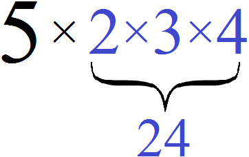
Знак коэффициента отнóсится только к коэффициенту, и не отнóсится к переменным!
Рассмотрим выражение −6b. Минус, стоящий перед коэффициентом 6, отнóсится только к коэффициенту 6, и не отнóсится к переменной b. Понимание этого факта позвóлит не ошибаться в будущем со знаками.
Найдем значение выражения −6b при b = 3.
−6b это короткая форма записи от −6 × b. Для наглядности запишем выражение −6b в развёрнутом виде и подставим значение переменной b
−6b = −6 × b = −6 × 3 = −18
Пример 2. Найти значение выражения −6b при b = −5
Запишем выражение −6b в развёрнутом виде
−6b = −6 × b
и далее подставим значение переменной b
−6b = −6 × b = −6 × (−5) = 30
Пример 3. Найти значение выражения −5a + b при a = 3 и b = 2
−5a + b это короткая форма записи от −5 × a + b, поэтому для наглядности запишем выражение −5 × a + b в развёрнутом виде и подстáвим значения переменных a и b
−5a + b = −5 × a + b = −5 × 3 + 2 = −15 + 2 = −13
Иногда буквы записаны без коэффициента, например a или ab. В этом случае коэффициентом является единица:
1a, 1ab
но единицу по традиции не записывают, поэтому просто пишут a или ab
Если перед буквой стоит минус, то коэффициентом является число −1. Например, выражение −a на самом деле выглядит как −1a. Это произведение минус единицы и переменной a. Оно получилось следующим образом:
−1 × a = −1a
Здесь крóется небольшой подвох. В выражении −a минус, стоящий перед переменной a на самом деле относится к невидимой единице, а не к переменной a. Поэтому при решении задач следует быть внимательным.
К примеру, если дано выражение −a и нас прóсят найти его значение при a = 2, то в школе мы подставляли двойку вместо переменной a и получали ответ −2, не особо зацикливаясь на том, как это получалось. На самом деле происходило умножение минус единицы на положительное число 2
−a = −1 × a
−1 × a = −1 × 2 = −2
Если дано выражение −a и требуется найти его значение при a = −2, то мы подставляем −2 вместо переменной a
−a = −1 × a
−1 × a = −1 × (−2) = 2
Чтобы не допускать ошибок, первое время невидимые единицы можно записывать явно.
Пример 4. Найти значение выражения abc при a = 2, b = 3 и c = 4
Выражение abc это короткая форма записи от 1 × a × b × c. Для наглядности запишем выражение abc в развёрнутом виде и подставим значения переменных a, b и c
1 × a × b × c = 1 × 2 × 3 × 4 = 24
Пример 5. Найти значение выражения abc при a = −2, b = −3 и c = −4
Запишем выражение abc в развёрнутом виде и подставим значения переменных a, b и c
1 × a × b × c = 1 × (−2) × (−3) × (−4) = −24
Пример 6. Найти значение выражения −abc при a = 3, b = 5 и c = 7
Выражение −abc это короткая форма записи −1 × a × b × c. Для наглядности запишем выражение −abc в развёрнутом виде и далее подставим значения переменных a, b и c
−abc = −1 × a × b × c = −1 × 3 × 5 × 7 = −105
Пример 7. Найти значение выражения −abc при a = −2, b = −4 и c = −3
Запишем выражение −abc в развёрнутом виде:
−abc = −1 × a × b × c
Подставим значение переменных a, b и c
−abc = −1 × a × b × c = −1 × (−2) × (−4) × (−3) = 24
Как определить коэффициент
Иногда требуется решить задачу в которой надо определить коэффициент выражения. Эта задача очень простá. Достаточно уметь правильно умножать числа.
Чтобы определить коэффициент в выражении, нужно по отдельности перемножить числа и буквы, входящие в это выражение. Получившийся числовой сомножитель и будет коэффициентом.
Пример 1. Определить коэффициент в выражении: 7m × 5a × (−3) × n
Выражение состоит из нескольких сомножителей. Это можно отчетливо увидеть, если записать выражение в развёрнутом виде. То есть произведения 7m и 5a записать в виде 7 × m и 5 × a
7 × m × 5 × a × (−3) × n
Применим сочетательный закон умножения, который позволяет перемножать сомножители в любом порядке. В нашем случае перемнóжим числа и буквы (переменные) по отдельности
−3 × 7 × 5 × m × a × n = −105man
Коэффициент равен −105. После завершения буквенную часть желательно расположить в алфавитном порядке:
−105amn
Пример 2. Определить коэффициент в выражении: −a × (−3) × 2
Перемножим отдельно числа и буквы:
−a × (−3) × 2 = −3 × 2 × (−a) = −6 × (−a) = 6a
Коэффициент равен 6.
Пример 3. Определить коэффициент в выражении:
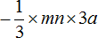
Перемножим числа и буквы по отдельности:
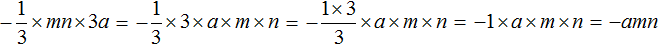
Коэффициент равен −1. Обратите внимание, что единица не записана, поскольку коэффициент 1 принято не записывать.
Эти казалось бы простейшие задачи могут сыграть с нами очень злую шутку. Часто выясняется, что знак коэффициента поставлен неправильно — либо пропущен минус либо наоборот он поставлен зря. Чтобы избежать этих неприятных ошибок, тема умножения целых чисел должна быть изучена на хорошем уровне.
Слагаемые в буквенных выражениях
При сложении нескольких чисел получается сумма этих чисел. Числа, которые складывают, называют слагаемыми. Слагаемых может быть несколько, например:
1 + 2 + 3 + 4 + 5
Когда выражение состоит из слагаемых, вычислять его намного проще, потому что складывать легче, чем вычитать.
Но выражении может содержать не только сложение, но и вычитание, например:
1 + 2 − 3 + 4 − 5
В этом выражении числа 3 и 5 являются вычитаемыми, а не слагаемыми. Но нам ничего не мешает, заменить вычитание сложением. Тогда мы снова получим выражение, состоящее из слагаемых:
1 + 2 + (−3) + 4 + (−5)
Не суть, что числа −3 и −5 теперь со знаком минус. Главное, что все числа в данном выражении соединены знаком сложения, то есть выражение является суммой.
Оба выражения 1 + 2 − 3 + 4 − 5 и 1 + 2 + (−3) + 4 + (−5) равны одному и тому значению — минус единице:
1 + 2 − 3 + 4 − 5 = −1
1 + 2 + (−3) + 4 + (−5) = −1
Таким образом, значение выражения не пострадает от того, что мы где-то заменим вычитание сложением.
Заменять вычитание сложением можно и в буквенных выражениях. Например, рассмотрим следующее выражение:
7a + 6b − 3c + 2d − 4s
Заменим вычитание сложением там, где это можно:
7a + 6b + (−3c) + 2d + (−4s)
При любых значениях переменных a, b, c, d и s выражения 7a + 6b − 3c + 2d − 4s и 7a + 6b + (−3c) + 2d + (−4s) будут равны одному и тому же значению.
Вы должны быть готовы к тому, что учитель в школе или преподаватель в институте может называть слагаемыми даже те числа (или переменные), которые ими не являются.
Например, если на доске будет записана разность a − b, то учитель не будет говорить, что a — это уменьшаемое, а b — вычитаемое. Обе переменные он назовет одним общим словом — слагаемые. А всё потому, что выражение вида a − b математик видит, как сумму a + (−b). В таком случае выражение становится суммой, а переменные a и (−b) станóвятся слагаемыми.
Подобные слагаемые
Подобные слагаемые — это слагаемые, которые имеют одинаковую буквенную часть.
Например, рассмотрим выражение 7a + 6b + 2a. Слагаемые 7a и 2a имеют одинаковую буквенную часть — переменную a. Значит слагаемые 7a и 2a являются подобными.
Подобные слагаемые складывают, чтобы упростить выражение или решить уравнение. Это действие называют приведéнием подобных слагаемых.
Чтобы привести подобные слагаемые, нужно сложить коэффициенты этих слагаемых, и полученный результат умножить на общую буквенную часть.
Например, приведём подобные слагаемые в выражении 3a + 4a + 5a. В данном случае подобными являются все слагаемые. Слóжим их коэффициенты и результат умножим на общую буквенную часть — на переменную a
3a + 4a + 5a = (3 + 4 + 5) × a = 12a
Подобные слагаемые принято приводить в уме и результат записывать сразу
3a + 4a + 5a = 12a
Ещё можно рассуждать так:
«Было 3 переменные a, к ним прибавили еще 4 переменные a и ещё 5 переменных a. В итоге получили 12 переменных a«
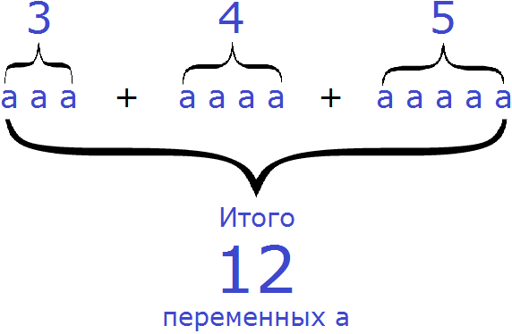
Если подсчитать на рисунке количество переменных a, то насчитается 12.
Рассмотрим несколько примеров на приведение подобных слагаемых. Учитывая, что данная тема очень важна, на первых порах будем записывать подробно каждую мелочь. Несмотря на то что здесь всё просто, большинство людей допускают ошибки. В основном по невнимательности, а не по незнанию.
Пример 1. Привести подобные слагаемые в выражении 3a + 2a + 6a + 8a
Сложим коэффициенты и полученный результат умножим на общую буквенную часть
3a + 2a + 6a + 8a= (3 + 2 + 6 + 8) × a = 19a
Конструкцию (3 + 2 + 6 + 8) × a можно не записывать, поэтому сразу запишем ответ
3a + 2a + 6a + 8a = 19a
Пример 2. Привести подобные слагаемые в выражении 2a + a
Второе слагаемое a записано без коэффициента, значит перед ним располагается единица как было сказано ранее. Стало быть, выражение выглядит так:
2a + 1a
Теперь приведем подобные слагаемые. Слóжим коэффициенты и результат умнóжим на общую буквенную часть:
2a + 1a = (2 + 1) × a = 3a
Запишем решение покороче:
2a + a = 3a
Приводя подобные слагаемые в выражении 2a + a, можно рассуждать и так:
«Было 2 переменные a, добавили ещё одну переменную a, в итоге получилось 3 переменные a«
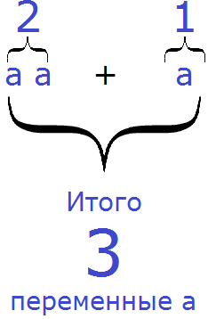
Пример 3. Привести подобные слагаемые в выражении 2a − a
Заменим вычитание сложением:
2a + (−a)
Коэффициентом второго слагаемого (−a) является −1 Стало быть, выражение выглядит так:
2a + (−1a)
Теперь приведем подобные слагаемые. Сложим коэффициенты и результат умножим на общую буквенную часть:
2a + (−1a) = (2 + (−1)) × a = 1a = a
Запишем покороче:
2a − a = a
Приводя подобные слагаемые в выражении 2a−a можно рассуждать так:
«Было 2 переменные a, вычли одну переменную a, в итоге осталась одна единственная переменная a«
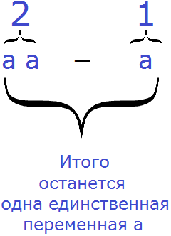
Пример 4. Привести подобные слагаемые в выражении 6a − 3a + 4a − 8a
Заменим вычитание сложение там, где это можно:
6a − 3a + 4a − 8a = 6a + (−3a) + 4a + (−8a)
Теперь приведем подобные слагаемые. Сложим коэффициенты и результат умножим на общую буквенную часть
(6 + (−3) + 4 + (−8)) × a = −1a = −a
Запишем решение покороче:
6a − 3a + 4a − 8a = −a
Встречаются выражения, которые содержат несколько различных групп подобных слагаемых. Например, 3a + 3b + 7a + 2b. Для таких выражений справедливы те же правила, что и для остальных — складывание коэффициентов и умножение полученного результата на общую буквенную часть. Но чтобы не допустить ошибок, разные группы слагаемых подчеркивают разными линиями.
Например, в выражении 3a + 3b + 7a + 2b те слагаемые, которые содержат переменную a, можно подчеркнуть одной линией, а слагаемые которые содержат переменную b — подчеркнуть двумя линиями:
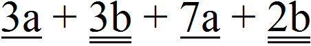
Теперь можно привести подобные слагаемые. То есть сложить коэффициенты и полученный результат умножить на общую буквенную часть. Сделать это нужно для обеих групп слагаемых: для слагаемых, содержащих переменную a и для слагаемых содержащих переменную b.
3a + 3b + 7a + 2b = (3+7) × a + (3 + 2) × b = 10a + 5b
Опять же повторимся, примеры несложные, и подобные слагаемые можно приводить в уме:
3a + 3b + 7a + 2b = 10a + 5b
Пример 5. Привести подобные слагаемые в выражении 5a − 6a −7b + b
Заменим вычитание сложение там, где это можно:
5a − 6a − 7b + b = 5a + (−6a) + (−7b) + b
Подчеркнём подобные слагаемые разными линиями. Слагаемые, содержащие переменные a подчеркнём одной линией, а слагаемые содержащие переменные b — двумя линиями:
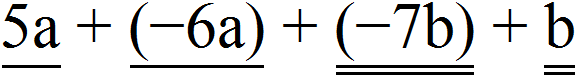
Теперь слóжим коэффициенты и полученный результат умнóжим на общую буквенную часть:
5a + (−6a) + (−7b) + b = (5 + (−6)) × a + ((−7) + 1) × b = −a + (−6b)
Если в выражении содержатся привычные для нас числа без буквенных сомножителей, то их складывают отдельно. В следующем примере показано это.
Пример 6. Привести подобные слагаемые в выражении 4a + 3a − 5 + 2b + 7
Заменим вычитание сложением там, где это можно:
4a + 3a − 5 + 2b + 7 = 4a + 3a + (−5) + 2b + 7
Приведем подобные слагаемые. Числа −5 и 7 не имеют буквенных сомножителей, но они являются подобными слагаемыми — их необходимо сложить. А слагаемое 2b останется без изменений, поскольку оно единственное в данном выражении, имеющее буквенный сомножитель b, и его не с чем складывать:
4a + 3a + (−5) + 2b + 7 = (4 + 3) × a + 2b + (−5) + 7 = 7a + 2b + 2
Запишем решение покороче:
4a + 3a − 5 + 2b + 7 = 7a + 2b + 2
Слагаемые можно упорядочивать, чтобы те слагаемые, которые имеют одинаковую буквенную часть, располагались в одной части выражения. В следующем примере показано это.
Пример 7. Привести подобные слагаемые в выражении 5t + 2x + 3x + 5t + x
Поскольку выражение является суммой из нескольких слагаемых, это позволяет нам вычислять его в любом порядке. Поэтому слагаемые, содержащие переменную t, можно записать в начале выражения, а слагаемые содержащие переменную x в конце выражения:
5t + 5t + 2x + 3x + x
Теперь можно привести подобные слагаемые:
5t + 5t + 2x + 3x + x = (5 + 5) × t + (2 + 3 + 1) × x = 10t + 6x
Запишем решение покороче:
5t + 2x + 3x + 5t + x = 10t + 6x
Сумма противоположных чисел равна нулю. Это правило работает и для буквенных выражений. Если в выражении встретятся одинаковые слагаемые, но с противоположными знаками, то от них можно избавиться на этапе приведения подобных слагаемых. Иными словами, просто вычеркнуть их из выражения, поскольку их сумма равна нулю.
Пример 8. Привести подобные слагаемые в выражении 3t − 4t − 3t + 2t
Заменим вычитание сложением там, где это можно:
3t − 4t − 3t + 2t = 3t + (−4t) + (−3t) + 2t
Слагаемые 3t и (−3t) являются противоположными. Сумма противоположных слагаемых равна нулю. Если убрать этот ноль из выражения, то значение выражения не изменится, поэтому мы его и уберём. А уберём мы его обычным вычеркиванием слагаемых 3t и (−3t)
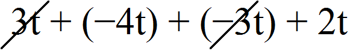
В результате останется выражение (−4t) + 2t. В данном выражении можно привести подобные слагаемые и получить окончательный ответ:
(−4t) + 2t = ((−4) + 2) × t = −2t
Запишем решение покороче:
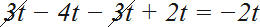
Упрощение выражений
Часто можно встретить задание, в котором сказано «упростите выражение» и далее приводится выражение, которое нужно упростить. Упростить выражение значит сделать его прóще и корóче.
На самом деле мы уже занимались упрощением выражений, когда сокращали дроби. После сокращения дробь становилась короче и проще для восприятия.
Рассмотрим следующий пример. Упростить выражение  .
.
Это задание буквально можно понять так: «Примените к данному выражению любые допустимые действия, но сделайте его прóще».
В данном случае можно осуществить сокращение дроби, а именно разделить числитель и знаменатель дроби на 2:
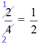
Что ещё можно сделать? Можно вычислить полученную дробь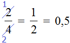
В результате дробь  упростилась до 0,5.
упростилась до 0,5.
Первый вопрос, который нужно себе задавать при решении подобных задач, должен быть: «а что можно сделать?». Потому что есть действия, которые можно делать, и есть действия, которые делать нельзя.
Ещё один важный момент заключается в том, что значение выражение не должно измениться после упрощения выражения.
Вернёмся к выражению  . Данное выражение представляет собой деление, которое можно выполнить. Выполнив это деление, мы получаем значение данного выражения, которое равно 0,5
. Данное выражение представляет собой деление, которое можно выполнить. Выполнив это деление, мы получаем значение данного выражения, которое равно 0,5

Мы упростили выражение  и получили новое выражение
и получили новое выражение  . Значение нового упрощённого выражения по-прежнему равно 0,5
. Значение нового упрощённого выражения по-прежнему равно 0,5

Но выражение  мы тоже попытались упростить, вычислив его. В итоге получили окончательный ответ 0,5.
мы тоже попытались упростить, вычислив его. В итоге получили окончательный ответ 0,5.
Таким образом, как бы мы не упрощали выражение, значение получаемых выражений по-прежнему было равно 0,5. Значит упрощение выполнялось правильно на каждом этапе. Именно к этому нужно стремиться при упрощении выражений — значение выражения не должно пострадать от наших действий.
Часто требуется упрощать буквенные выражения. Для них справедливы те же правила упрощения, что и для числовых выражений. Можно выполнять любые допустимые действия, лишь бы не изменилось значение выражения.
Рассмотрим несколько примеров.
Пример 1. Упростить выражение 5,21s × t × 2,5
Чтобы упростить данное выражение, можно отдельно перемножить числа и буквы по отдельности. Это задание похоже на то, которое мы рассматривали, когда учились определять коэффициент:
5,21s × t × 2,5 = 5,21 × 2,5 × s × t = 13,025 × st = 13,025st
Таким образом, выражение 5,21s × t × 2,5 упростилось до 13,025st.
Пример 2. Упростить выражение −0,4 × (−6,3b) × 2
Второе произведение (−6,3b) можно записать в понятном для нас виде, а именно как (−6,3) × b, затем отдельно перемножить числа и буквы по отдельности:
−0,4 × (−6,3b) × 2 = −0,4 × (−6,3) × b × 2 = 5,04b
Таким образом, выражение −0,4 × (−6,3b) × 2 упростилось до 5,04b
Пример 3. Упростить выражение
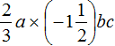
Запишем данное выражение более развёрнуто, чтобы хорошо увидеть, где числа, а где буквы:
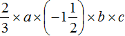
Теперь перемножим числа и буквы по отдельности:
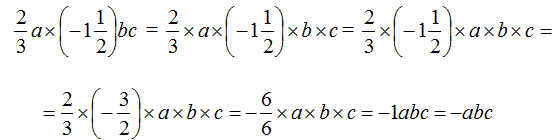
Таким образом, выражение упростилось до −abc.
Решение можно записать покороче:
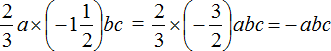
При упрощении выражений, дроби можно сокращать в процессе решения.
Например, если в ходе решения мы наткнёмся на выражение вида
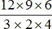
, то вовсе необязательно вычислять числитель и знаменатель, а затем расписывать вот так подробное сокращение: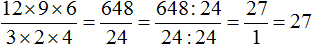
Дробь можно сократить, выбирая по множителю в числителе и в знаменателе и сокращать эти множители на их наибольший общий делитель. Другими словами, использовать короткую версию сокращения дроби, в которой мы не расписываем подробно на что был разделен числитель и знаменатель.
Например, в числителе множитель 12 и в знаменателе множитель 4 можно сократить на 4. Четвёрку храним в уме, а разделив 12 и 4 на эту четвёрку, ответы записываем рядом с этими числами, предварительно зачеркнув их
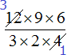
Далее в числителе множитель 9 и в знаменателе множитель 3 можно сократить на 3
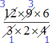
Далее в числителе множитель 6 и в знаменателе множитель 2 можно сократить на 2
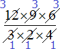
Теперь можно перемножить получившиеся маленькие множители. В данном случае их немного и можно перемножить в уме:
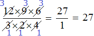
Со временем можно увидеть, что решая ту или иную задачу, выражения начинают «толстеть», поэтому желательно приучиться к быстрым вычислениям. То что можно вычислить в уме, нужно вычислять в уме. А то что можно быстро сократить, нужно быстро сокращать.
Пример 4. Упростить выражение
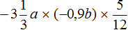
Перемножим числа и буквы по отдельности
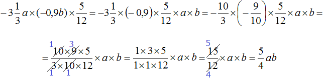
Таким образом, выражение упростилось до
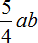
Пример 5. Упростить выражение
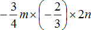
Перемножим числа и буквы по отдельности
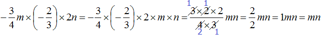
Таким образом, выражение упростилось до mn.
Пример 6. Упростить выражение
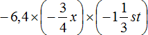
Запишем данное выражение более развёрнуто, чтобы хорошо увидеть, где числа, а где буквы
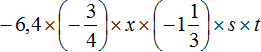
Теперь перемножим числа и буквы по отдельности. Для удобства вычислений десятичную дробь −6,4 и смешанное число  можно перевести в обыкновенные дроби
можно перевести в обыкновенные дроби
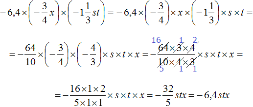
Таким образом, выражение упростилось до
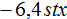
Решение для данного примера можно записать значительно короче. Выглядеть оно будет так:
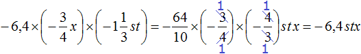
Пример 7. Упростить выражение
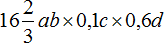
Перемножим отдельно числа и отдельно буквы. Для удобства вычисления смешанное число
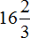
и десятичные дроби 0,1 и 0,6 можно перевести в обыкновенные дроби: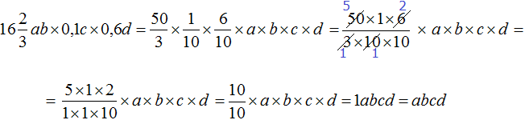
Таким образом, выражение упростилось до abcd. Если пропустить подробности, то данное решение можно записать покороче:
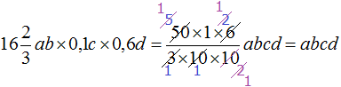
Обратите внимание на то, как сократилась дробь. Новые множители, которые получаются в результате сокращения предыдущих множителей, тоже допускается сокращать.

Теперь поговорим о том, чего делать нельзя. При упрощении выражений категорически нельзя перемножать числа и буквы, если выражение является суммой, а не произведением.
Например, если требуется упростить выражение 5a + 4b, то вот так записывать нельзя:
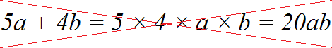
Это равносильно тому, что если бы нас попросили сложить два числа, а мы бы их перемножали вместо того, чтобы складывать.
При подстановке любых значений переменных a и b выражение 5a + 4b обращается в обыкновенное числовое выражение. Предположим, что переменные a и b имеют следующие значения:
a = 2, b = 3
Тогда значение выражения будет равно 22
5a + 4b = 5 × 2 + 4 × 3 = 10 + 12 = 22
Сначала выполняется умножение, а затем полученные результаты складывают. А если бы мы попытались упростить данное выражение, перемножив числа и буквы, то получилось бы следующее:
5a + 4b = 5 × 4 × a × b = 20ab
20ab = 20 × 2 × 3 = 120
Получается совсем другое значение выражения. В первом случае получилось 22, во втором случае 120. Это означает, что упрощение выражения 5a + 4b было выполнено неправильно.
После упрощения выражения, его значение не должно изменяться при одних и тех же значениях переменных. Если при подстановке в изначальное выражение любых значений переменных получается одно значение, то после упрощения выражения должно получаться то же самое значение, что и до упрощения.
С выражением 5a + 4b на самом деле ничего делать нельзя. Оно не упрощается.

Если в выражении содержатся подобные слагаемые, то их можно сложить, если целью является упрощение выражения.
Пример 8. Упростить выражение 0,3a − 0,4a + a
Чтобы упростить данное выражение можно привести подобные слагаемые:
0,3a − 0,4a + a = 0,3a + (−0,4a) + a = (0,3 + (−0,4) + 1) × a = 0,9a
или покороче: 0,3a − 0,4a + a = 0,9a
Таким образом, выражение 0,3a − 0,4a + a упростилось до 0,9a
Пример 9. Упростить выражение −7,5a − 2,5b + 4a
Чтобы упростить данное выражение можно привести подобные слагаемые:
−7,5a − 2,5b + 4a = −7,5a + (−2,5b) + 4a = ((−7,5) + 4)×a + (−2,5b) = −3,5a + (−2,5b)
или покороче −7,5a − 2,5b + 4a = −3,5a + (−2,5b)
Слагаемое (−2,5b) осталось без изменений, поскольку его не с чем было складывать.
Пример 10. Упростить выражение
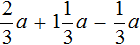
Чтобы упростить данное выражение можно привести подобные слагаемые:
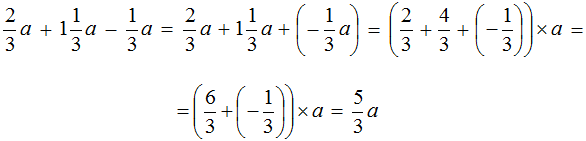
Коэффициент  был переведён в неправильную дробь для удобства вычисления.
был переведён в неправильную дробь для удобства вычисления.
Таким образом, выражение упростилось до
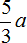
Пример 11. Упростить выражение
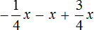
Чтобы упростить данное выражение можно привести подобные слагаемые:
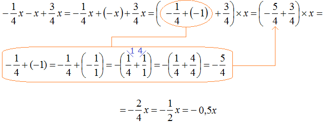
Таким образом, выражение упростилось до
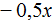
.В данном примере целесообразнее было бы сложить первый и последний коэффициент в первую очередь. В этом случае мы получили бы короткое решение. Выглядело бы оно следующим образом:
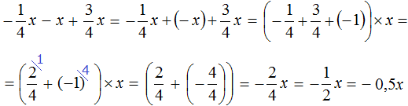
Пример 12. Упростить выражение
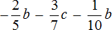
Чтобы упростить данное выражение можно привести подобные слагаемые:
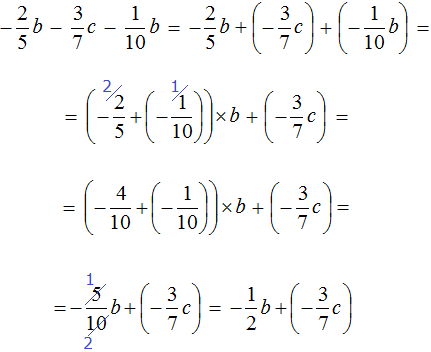
Таким образом, выражение упростилось до
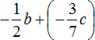
.Слагаемое
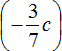
осталось без изменения, поскольку его не с чем было складывать.Данное решение можно записать значительно короче. Выглядеть оно будет следующим образом:
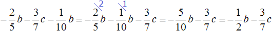
В коротком решении пропущены этапы замены вычитания сложением и подробная запись, как дроби приводились к общему знаменателю.
Ещё одно различие заключается в том, что в подробном решении ответ выглядит как , а в коротком как
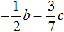
. На самом деле, это одно и то же выражение. Различие в том, что в первом случае вычитание заменено сложением, поскольку в начале когда мы записывали решение в подробном виде, мы везде где можно заменили вычитание сложением, и эта замена сохранилась и для ответа.Тождества. Тождественно равные выражения
После того как мы упростили какое-нибудь выражение, оно станóвится проще и короче. Чтобы проверить верно ли упрощено выражение, достаточно подстáвить любые значения переменных сначала в предыдущее выражение, которое требовалось упростить, а затем в новое, которое упростили. Если значение в обоих выражениях будет одинаковым, то это означает, что выражение упрощено верно.
Рассмотрим простейший пример. Пусть требуется упростить выражение 2a × 7b. Чтобы упростить данное выражение, можно по-отдельности перемнóжить числа и буквы:
2a × 7b = 2 × 7 × a × b = 14ab
Проверим верно ли мы упростили выражение. Для этого подставим любые значения переменных a и b сначала в первое выражение, которое требовалось упростить, а затем во второе, которое упростили.
Пусть значения переменных a, b будут следующими:
a = 4
b = 5
Подстáвим их в первое выражение 2a × 7b
2a × 7b = 2 × 4 × 7 × 5 = 280
Теперь подстáвим те же значения переменных в выражение, которое получилось в результате упрощения выражения 2a × 7b, а именно в выражение 14ab
14ab = 14 × 4 × 5 = 280
Видим, что при a = 4 и b = 5 значение первого выражения 2a × 7b и значение второго выражения 14ab равны
2a × 7b = 2 × 4 × 7 × 5 = 280
14ab = 14 × 4 × 5 = 280
То же самое произойдет и для любых других значений. Например, пусть a = 1 и b = 2
2a × 7b = 2 × 1 × 7 × 2 = 28
14ab = 14 × 1 × 2 = 28
Таким образом, выражения 2a × 7b и 14ab при любых значениях переменных равны одному и тому же значению. Такие выражения называют тождественно равными.
Делаем вывод, что между выражениями 2a × 7b и 14ab можно поставить знак равенства, поскольку они равны одному и тому же значению:
2a × 7b = 14ab
Равенством называют любое выражение, которые соединено знаком равенства (=).
А равенство вида 2a × 7b = 14ab называют тождеством.
Тождеством называют равенство, которое верно при любых значениях переменных.
Другие примеры тождеств:
a + b = b + a
a(b + c) = ab + ac
a(bc) = (ab)c
Да, законы математики, которые мы изучали, являются тождествами.
Верные числовые равенства тоже являются тождествами. Например:
2 + 2 = 4
3 + 3 = 5 + 1
10 = 7 + 2 + 1
Решая сложную задачу, чтобы облегчить себе вычисление, сложное выражение заменяют на более простое выражение, тождественно равное предыдущему. Такую замену называют тождественным преобразованием выражения или просто преобразованием выражения.
Например, мы упростили выражение 2a × 7b, и получили более простое выражение 14ab. Это упрощение можно называть тождественным преобразованием.
Часто можно встретить задание, в котором сказано «докажите, что равенство является тождеством» и далее приводится равенство, которое требуется доказать. Обычно это равенство состоит из двух частей: левой и правой части равенства. Наша задача состоит в том, чтобы выполнить тождественные преобразования с одной из частей равенства и получить другую часть. Либо выполнить тождественные преобразования с обеими частями равенства и сделать так, чтобы в обеих частях равенства оказались одинаковые выражения.
Например, докажем, что равенство 0,5a × 5b = 2,5ab является тождеством.
Упростим левую часть этого равенства. Для этого перемножим числа и буквы по отдельности:
0,5 × 5 × a × b = 2,5ab
2,5ab = 2,5ab
В результате небольшого тождественного преобразования, левая часть равенства стала равна правой части равенства. Значит мы доказали, что равенство 0,5a × 5b = 2,5ab является тождеством.
Из тождественных преобразований мы научились складывать, вычитать, умножать и делить числа, сокращать дроби, приводить подобные слагаемые, а также упрощать некоторые выражения.
Но это далеко не все тождественные преобразования, которые существуют в математике. Тождественных преобразований намного больше. В будущем мы ещё не раз в этом убедимся.
Задания для самостоятельного решения:
- Число a умножить на три, и из этого произведения вычесть пятнадцать
- Число t умножить на девять, и к полученному произведению прибавить тридцать пять